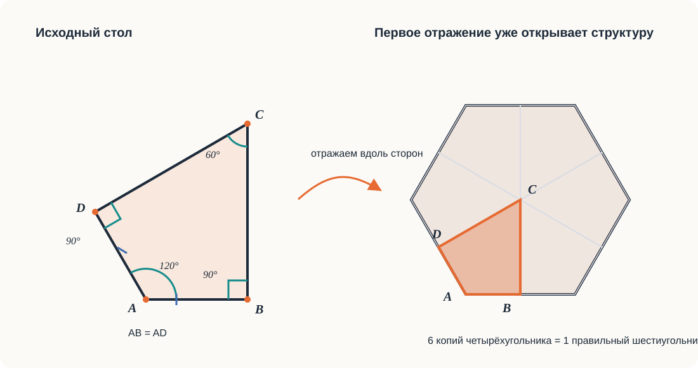
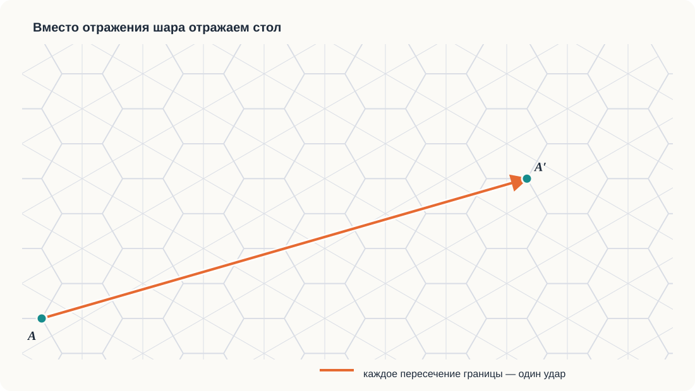
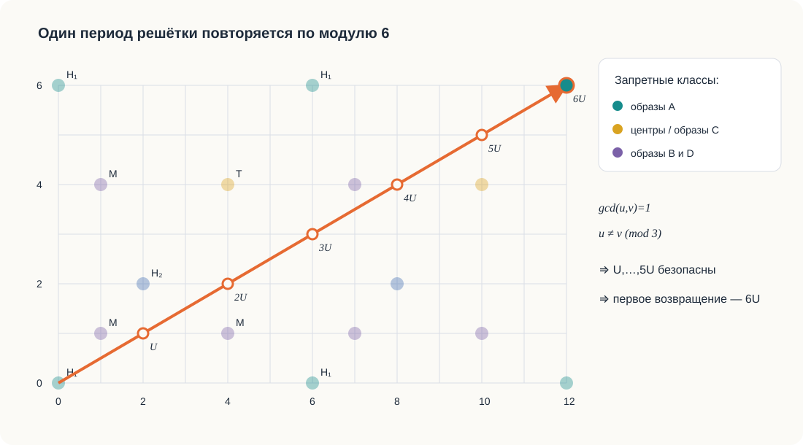
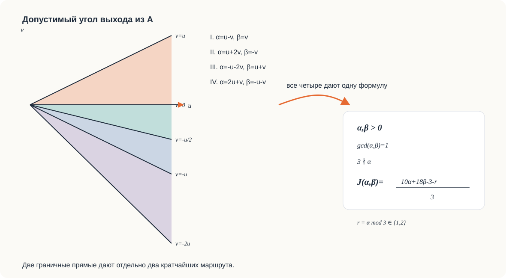
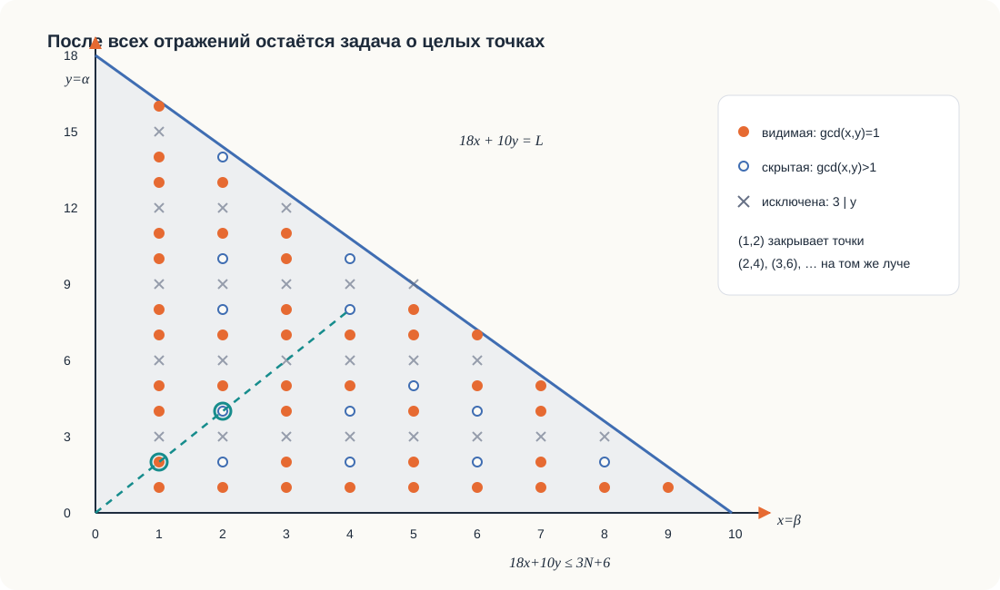
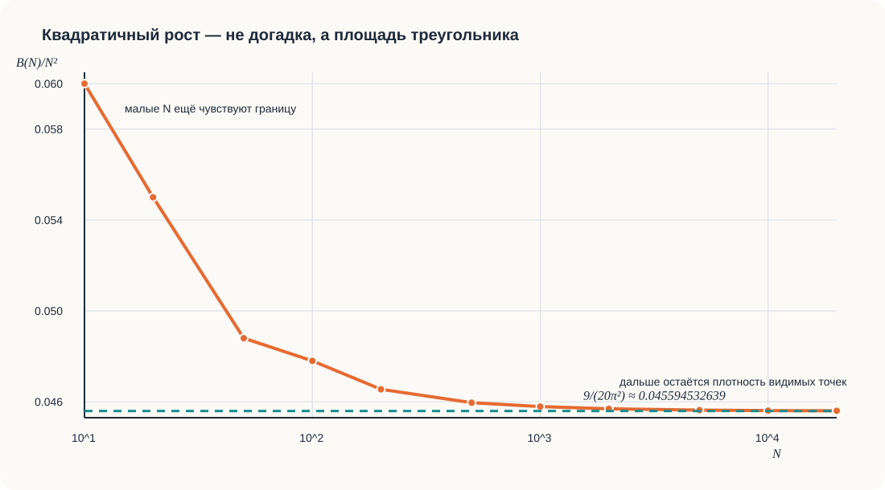

Бильярд
Условие задачи
Бильярдный стол имеет форму четырёхугольника $ABCD$ с углами $120^\circ$, $90^\circ$, $60^\circ$ и $90^\circ$, причём $AB=AD$. Шар выходит из вершины $A$, упруго отражается от сторон и должен вернуться в $A$. Попадать в углы стола запрещено.
Пусть $B(N)$ — количество возможных замкнутых траекторий не более чем с $N$ отражениями. Из условия известны значения
$$B(10)=6,\qquad B(100)=478,\qquad B(1000)=45790.$$
Требуется найти $B(10^9)$. Полное условие доступно на странице Project Euler 786.

Почему симуляция здесь не помогает
В этой задаче особенно легко начать считать не то. Шар отражается от четырёх сторон, после каждого удара меняет направление, а число ударов может доходить до миллиарда. Первая мысль — взять вектор скорости, выписать закон отражения и проследить траекторию. Я с этого и начал.
После двух-трёх отражений стало ясно, что такой подход описывает один маршрут, но никак не помогает пересчитать все маршруты. Нужен был не более быстрый симулятор, а другой взгляд на геометрию.
Классический приём для таких задач — развёртка бильярда. Наглядное объяснение есть в статье The Mysterious Math of Billiards Tables, а строгая формулировка — в §1.3 работы Говарда Мазура и Сержа Табачникова Rational billiards and flat structures. В момент удара можно отражать не траекторию, а сам стол. Тогда ломаная линия распрямляется.
Всё решение после этого раскладывается на три шага:
- развернуть бильярдную траекторию в прямую линию;
- понять, в какие отражённые копии вершины $A$ эта линия может прийти;
- пересчитать примитивные целые точки внутри треугольника.
1. Стол внутри правильного шестиугольника
Если отражать исходный четырёхугольник относительно его сторон, шесть копий точно собираются в правильный шестиугольник. Вершина $C$ становится его центром, $A$ — вершиной, а $B$ и $D$ — серединами двух соседних сторон.
Продолжая отражения, мы замощаем плоскость правильными шестиугольниками. Одновременно их центры образуют треугольную решётку. В развёртке присутствуют сразу две сетки:
- сплошная треугольная сетка;
- «пунктирная» сетка сторон шестиугольников.
Это различие существенно: количество ударов равно сумме пересечений с обеими сетками.
2. Развёртка: шар больше не отражается
По закону упругого отражения угол падения равен углу отражения. Если зеркально отразить стол относительно стороны в момент удара, продолжение траектории в отражённой копии пойдёт по той же прямой.
Повторяя эту операцию после каждого удара, получаем один прямой отрезок. Каждый удар теперь соответствует пересечению границы соседних копий стола.

Возвращение в исходную вершину $A$ означает, что прямая пришла в некоторый зеркальный образ $A'$. Поэтому вместо начальных направлений можно считать возможные концы $A'$.
Подходит не каждый образ $A$. Открытый отрезок $AA'$ не должен пройти ни через одну вершину замощения: такая точка соответствует запрещённому удару в угол. Именно этот запрет превращает геометрию в арифметику.
3. Координаты и запрещённые остатки
Выберем косоугольный базис треугольной решётки
$$ e_1=\left(\frac16,0\right), \qquad e_2=\left(-\frac1{12},\frac{\sqrt3}{12}\right), $$
и поместим $A$ в $(0,0)$. Запись $(x,y)$ далее означает физическую точку $xe_1+ye_2$. Масштаб не важен, зато все интересующие нас вершины получают целые координаты.
Образы вершин распадаются на шесть классов по модулю $6$:
$$ \begin{aligned} \mathcal H_1&=(6\mathbb Z)^2,\\ \mathcal H_2&=(2,2)+(6\mathbb Z)^2,\\ \mathcal T&=(4,4)+(6\mathbb Z)^2,\\ \mathcal M_1&=(1,1)+(6\mathbb Z)^2,\\ \mathcal M_2&=(1,-2)+(6\mathbb Z)^2,\\ \mathcal M_3&=(-2,1)+(6\mathbb Z)^2. \end{aligned} $$
Множества $\mathcal H_1\cup\mathcal H_2$ содержат образы $A$, $\mathcal T$ — образы $C$, а три множества $\mathcal M_i$ — образы $B$ и $D$. Поэтому запрещённые остатки $(x,y)\pmod6$ равны
$$ \mathcal C=\{(0,0),(1,1),(2,2),(4,4),(1,4),(4,1)\}. $$
Вся бесконечная геометрия свернулась в проверку шести точек внутри одного квадрата остатков.
4. Почему конец имеет вид $6(u,v)$
Пусть допустимый конец развёрнутой траектории равен
$$ P=(a,b), \qquad d=\gcd(|a|,|b|), \qquad U=(u,v)=\frac Pd, $$
так что $\gcd(|u|,|v|)=1$. Целые точки на открытом отрезке от $0$ до $P$ имеют вид $U,2U,\ldots,(d-1)U$. Если одна из них попадает в $\mathcal C$, шар ударяется в угол.
Случай $u\equiv v\pmod3$ невозможен
- если $u\equiv v\equiv0\pmod3$, числа $u$ и $v$ не взаимно просты;
- если $u\equiv v\equiv1\pmod3$, уже $U\pmod6$ принадлежит запрещённому классу;
- если $u\equiv v\equiv2\pmod3$, то $2U\equiv(4,4)\pmod6$, то есть луч приходит в образ $C$.
Следовательно,
$$u\not\equiv v\pmod3.$$
Первые пять кратных безопасны
При $u\not\equiv v\pmod3$ точки $jU$ для $j=1,2,4,5$ не могут попасть в $\mathcal C$: их координаты различны по модулю $3$, а у запрещённых классов одинаковы. Для $j=3$ возможны только остатки $(0,3)$, $(3,0)$ и $(3,3)$ — их в $\mathcal C$ тоже нет.
Шестая точка уже является образом $A$:
$$6U=(6u,6v)\in\mathcal H_1.$$

Из угла $A=120^\circ$ луч должен выходить между направлениями $(1,1)$ и $(1,-2)$. Значит,
$$u>0,\qquad -2u<v<u.$$
Все допустимые концы описываются точно:
$$ \boxed{ \mathcal P= \left\{ 6(u,v): \gcd(u,v)=1, \ u>0, \ -2u<v<u, \ u\not\equiv v\pmod3 \right\}. } $$
Запрет «не ударяться в угол» стал двумя арифметическими условиями: взаимной простотой и сравнением по модулю $3$.
5. Сколько ударов соответствует $(u,v)$
Теперь нужно посчитать, сколько границ пересекает отрезок от $0$ до $6(u,v)$. Границы бывают двух типов.
5.1. Стороны треугольной сетки
Три семейства параллельных прямых имеют уравнения
$$x=6k+4,\qquad y=6k+4,\qquad x+y=6k+2,$$
где $k\in\mathbb Z$. Подставим параметризацию отрезка $(x,y)=(6tu,6tv)$ при $0<t<1$. Первое семейство пересекается $u$ раз, второе — $|v|$ раз, третье — $|u+v|$ раз. Поэтому
$$\boxed{I_\triangle(u,v)=u+|v|+|u+v|}.$$
$$ I_\triangle(u,v)= \begin{cases} 2u+2v,&0<v<u,\\ 2u,&-u\leq v\leq0,\\ -2v,&-2u<v<-u. \end{cases} $$
5.2. Стороны шестиугольников
Здесь прямые идут в тех же направлениях, но занимают только часть каждого периода. Для одного семейства условие пересечения после подстановки $t$ сводится к
$$ t=\frac{k}{u-v}, \qquad 0\leq \frac{ku\bmod(u-v)}{u-v} \leq\frac13. $$
Так как $\gcd(u,u-v)=\gcd(u,v)=1$, умножение на $u$ переставляет все ненулевые остатки по модулю $u-v$. В первой трети периода оказывается ровно $\lfloor(u-v)/3\rfloor$ пересечений.
Обозначим
$$\delta\equiv u-v\pmod3,\qquad\delta\in\{1,2\}.$$
Аналогичный подсчёт для двух других направлений даёт
$$ I_{\mathrm{hex}}(u,v)= \begin{cases} \dfrac{4u+2v-3-\delta}{3},&u+2v>0,\\[8pt] \dfrac{2u-2v-6+\delta}{3},&u+2v<0. \end{cases} $$
Равенство $u+2v=0$ невозможно: тогда $u-v$ делилось бы на $3$. Складывая два типа границ, получаем точное число ударов:
$$ I(u,v)= \begin{cases} \dfrac{10u+8v-3-\delta}{3},&0<v<u,\\[8pt] \dfrac{10u+2v-3-\delta}{3},&-\dfrac u2<v\leq0,\\[10pt] \dfrac{8u-2v-6+\delta}{3},&-u\leq v<-\dfrac u2,\\[10pt] \dfrac{2u-8v-6+\delta}{3},&-2u<v<-u. \end{cases} $$
Формула выглядит хуже исходной задачи, но следующий переход снова делает её простой.
6. Четыре сектора на самом деле одинаковы
В каждом диапазоне введём новые положительные координаты:
| Сектор | Диапазон $v$ | Замена координат |
|---|---|---|
| I | $0<v<u$ | $\alpha=u-v$, $\beta=v$ |
| II | $-u/2<v\leq0$ | $\alpha=u+2v$, $\beta=-v$ |
| III | $-u\leq v<-u/2$ | $\alpha=-u-2v$, $\beta=u+v$ |
| IV | $-2u<v<-u$ | $\alpha=2u+v$, $\beta=-u-v$ |
Каждая замена имеет целочисленную обратную, сохраняет взаимную простоту и переводит $u\not\equiv v\pmod3$ в условие $3\nmid\alpha$. Пусть $r\in\{1,2\}$ — остаток $\alpha$ по модулю $3$. Во всех четырёх секторах число ударов становится одной линейной формой:
$$ \boxed{ J(\alpha,\beta)= \frac{10\alpha+18\beta-3-r}{3} }. $$

Границы $v=0$ и $v=-u$ соответствуют $\beta=0$. Из взаимной простоты тогда следует $\alpha=1$. Это два особых кратчайших маршрута с двумя ударами. Каждая внутренняя точка $\alpha,\beta>0$ даёт четыре маршрута — по одному из каждого сектора.
$$B(N)=4C(N)+2,$$
где
$$ C(N)=\#\left\{ (\alpha,\beta)\in\mathbb Z_{>0}^2: \gcd(\alpha,\beta)=1, \ 3\nmid\alpha, \ J(\alpha,\beta)\leq N \right\}. $$
7. Треугольник $18x+10y\leq3N+6$
Неравенство $J(\alpha,\beta)\leq N$ равносильно
$$10\alpha+18\beta\leq3N+3+r.$$
Левая часть сравнима с $\alpha$, а значит с $r$, по модулю $3$. Поэтому границу $3N+3+r$ можно заменить общей границей $3N+6$: между ними нет дополнительных значений с нужным остатком.
Поменяем координаты местами: $x=\beta$, $y=\alpha$. Получаем центральную формулу решения:
$$ \boxed{ C(N)=\#\left\{ (x,y)\in\mathbb Z_{>0}^2: \gcd(x,y)=1, \ 3\nmid y, \ 18x+10y\leq3N+6 \right\}. } $$
Теперь мы считаем целые точки внутри прямоугольного треугольника, но берём только видимые из начала координат и исключаем каждую третью горизонталь.

Интерактивная схема перехода
Переключатели показывают исходный маршрут, развёртку и решётку. На третьем этапе ползунок $N$ перестраивает треугольник и пересчитывает число трасс.
Если $\gcd(x,y)=d>1$, точка $(x/d,y/d)$ лежит на том же луче ближе к началу координат. В развёртке траектория встречает специальную вершину раньше выбранного конца. Это стандартная связь между взаимной простотой и видимостью целой точки.
При $N=10$ имеем $18x+10y\leq36$. Единственная допустимая положительная пара — $(1,1)$. Она даёт четыре внутренних маршрута с восемью ударами; ещё два граничных маршрута имеют по два удара. Итого $B(10)=6$.
8. Функция Мёбиуса и примитивные точки
Формула с треугольником объясняет геометрию, но прямой перебор для $N=10^9$ всё ещё слишком велик. Условие взаимной простоты снимается тождеством
$$ \mathbf1_{\gcd(x,y)=1} =\sum_{d\mid x,\ d\mid y}\mu(d), $$
где $\mu$ — функция Мёбиуса. Это принцип включения-исключения, упакованный по общим делителям; связь с обращением по делителям описана в Encyclopedia of Mathematics.
Положим $L=3N+6$ и определим число точек без условия взаимной простоты:
$$ T(m)=\#\left\{ (a,b)\in\mathbb Z_{>0}^2: 3\nmid b, \ 18a+10b\leq m \right\}. $$
Если $d\mid x$ и $d\mid y$, пишем $x=da$, $y=db$. Делители $d$, кратные $3$, не дают вклада, потому что $3\nmid y$. Поэтому
$$ \boxed{ C(N)= \sum_{\substack{1\leq d\leq\lfloor L/28\rfloor\\3\nmid d}} \mu(d) T\!\left(\left\lfloor\frac Ld\right\rfloor\right) }. $$
Число $28$ — минимальный вес положительной пары: $18\cdot1+10\cdot1=28$.
8.1. Формула для $T(m)$
Запишем
$$b=3q+s,\qquad s\in\{1,2\},\qquad q\geq0.$$
Для фиксированных $s$ и $q$ число возможных $a$ равно
$$\left\lfloor\frac{m-10s-30q}{18}\right\rfloor.$$
Если
$$Q_s=\left\lfloor\frac{m-18-10s}{30}\right\rfloor,$$
то
$$ T(m)= \sum_{s=1}^{2}\sum_{q=0}^{Q_s} \left\lfloor\frac{m-10s-30q}{18}\right\rfloor. $$
Разобьём $q$ по остаткам: $q=3t+j$, где $j\in\{0,1,2\}$. При увеличении $t$ на единицу числитель уменьшается на $90$, а дробь — ровно на $5$:
$$ \left\lfloor \frac{m-10s-30j-90t}{18} \right\rfloor = \left\lfloor \frac{m-10s-30j}{18} \right\rfloor-5t. $$
Каждая из шести сумм стала арифметической прогрессией. Положим
$$ n_{s,j}=\max\left(0,\left\lfloor\frac{Q_s-j}{3}\right\rfloor+1\right), \qquad A_{s,j}=\left\lfloor\frac{m-10s-30j}{18}\right\rfloor. $$
Тогда точная формула содержит всего шесть слагаемых:
$$ \boxed{ T(m)= \sum_{s=1}^{2}\sum_{j=0}^{2} \left( n_{s,j}A_{s,j} -5\frac{n_{s,j}(n_{s,j}-1)}2 \right) }. $$
Иными словами, $T(m)$ — квадратичный квазиполином периода $90$.
9. Как не суммировать сто миллионов значений $d$
Аргумент $T$ зависит от $d$ только через $q=\lfloor L/d\rfloor$. Эта величина принимает лишь $O(\sqrt L)$ различных значений. Если для левой границы $\ell$ имеем $q=\lfloor L/\ell\rfloor$, то тот же частный сохраняется до
$$ r=\min\left( \left\lfloor\frac L{28}\right\rfloor, \left\lfloor\frac Lq\right\rfloor \right). $$
Введём ограниченную сумматорную функцию Мёбиуса
$$M_3(t)=\sum_{\substack{d\leq t\\3\nmid d}}\mu(d).$$
Целый блок $[\ell,r]$ даёт один вклад:
$$ \boxed{ C(N)= \sum_{\text{блоки }[\ell,r]} \bigl(M_3(r)-M_3(\ell-1)\bigr)T(q) }. $$
Для $N=10^9$ таких блоков около ста тысяч, а не сто миллионов. Осталось быстро получать $M_3(t)$. Пусть
$$M(t)=\sum_{d\leq t}\mu(d)$$
— обычная функция Мертенса. Для чисел, кратных $3$,
$$ \mu(3e)= \begin{cases} -\mu(e),&3\nmid e,\\ 0,&3\mid e. \end{cases} $$
Поэтому
$$M(t)=M_3(t)-M_3\!\left(\left\lfloor\frac t3\right\rfloor\right),$$
откуда
$$ \boxed{ M_3(t)= M(t)+M\!\left(\left\lfloor\frac t3\right\rfloor\right) +M\!\left(\left\lfloor\frac t9\right\rfloor\right)+\cdots }. $$
Саму $M(t)$ можно вычислять рекурсивно из тождества
$$\sum_{k=1}^{t}M\!\left(\left\lfloor\frac tk\right\rfloor\right)=1.$$
Действительно,
$$ \sum_{k\leq t}\sum_{d\leq t/k}\mu(d) =\sum_{n\leq t}\sum_{d\mid n}\mu(d)=1. $$
Выделяя $k=1$, получаем
$$ M(t)=1- \sum_{k=2}^{t}M\!\left(\left\lfloor\frac tk\right\rfloor\right). $$
Частные $\lfloor t/k\rfloor$ снова группируются в $O(\sqrt t)$ блоков. Небольшая таблица $\mu$, мемоизация больших значений $M(t)$ и блочная сумма делают вычисление сублинейным.
10. Почему ответ растёт как $N^2$
При больших $N$ треугольник $18x+10y\leq3N+6$ имеет катеты примерно $N/6$ и $3N/10$. Его площадь равна
$$\frac12\cdot\frac N6\cdot\frac{3N}{10}=\frac{N^2}{40}.$$
Плотность точек, для которых одновременно $\gcd(x,y)=1$ и $3\nmid y$, равна
$$ \frac23\prod_{p\neq3}\left(1-\frac1{p^2}\right) =\frac23\cdot\frac{1/\zeta(2)}{1-1/9} =\frac9{2\pi^2}. $$
Следовательно,
$$ C(N)\sim\frac9{80\pi^2}N^2, \qquad \boxed{B(N)\sim\frac9{20\pi^2}N^2}. $$

Асимптотика служит независимой проверкой. Если точная сумма заметно отклоняется от $9N^2/(20\pi^2)$, ошибка почти наверняка связана с потерянным сектором, неверным учётом строк $3\mid y$ или неправильной границей $3N+6$.
11. Контрольные значения и итоговая цепочка
Точные формулы воспроизводят все проверки из условия:
- $B(10)=6$;
- $B(100)=478$;
- $B(1000)=45790$.
Вся задача умещается в цепочку эквивалентностей:
$$ \begin{aligned} \text{бильярдная трасса} &\longleftrightarrow \text{прямая в отражённом замощении}\\ &\longleftrightarrow 6(u,v),\quad \gcd(u,v)=1,\quad u\not\equiv v\pmod3\\ &\longleftrightarrow (x,y)>0,\quad \gcd(x,y)=1,\quad 3\nmid y,\\ &\hspace{35mm}18x+10y\leq3N+6. \end{aligned} $$
Окончательная точная формула имеет вид
$$ \boxed{ B(N)= 4\sum_{\substack{1\leq d\leq\lfloor(3N+6)/28\rfloor\\3\nmid d}} \mu(d) T\!\left( \left\lfloor\frac{3N+6}{d}\right\rfloor \right)+2 }. $$
Функция $T(m)$ вычисляется шестью арифметическими прогрессиями из раздела 8.1, а сумма по $d$ сворачивается в блоки через $M_3$.
В конце от исходного бильярда почти ничего не осталось. Закон отражения дал развёртку; углы $120^\circ$, $90^\circ$, $60^\circ$, $90^\circ$ породили шестиугольную решётку; запрет удара в вершину стал условием взаимной простоты; число ударов превратилось в линейное неравенство; а миллиард исчез благодаря функции Мёбиуса и группировке одинаковых частных.
Похожий переход от отражений к треугольной решётке встречается в Project Euler 202: Laserbeam. Здесь дополнительная шестиугольная сетка делает геометрию богаче: именно она приносит сравнение по модулю $3$ и коэффициенты $10$ и $18$.